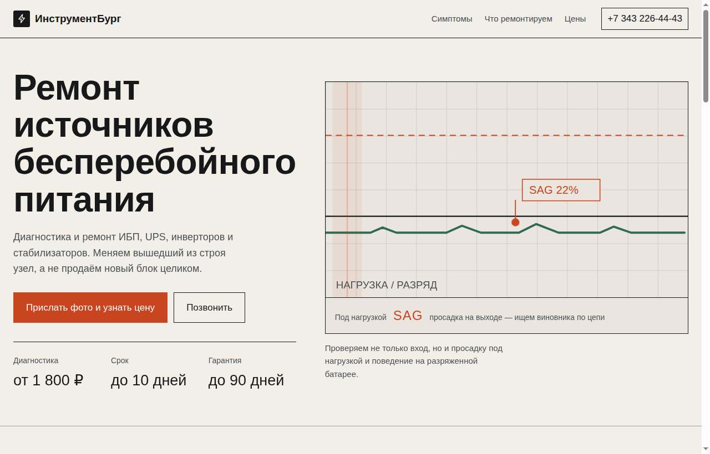
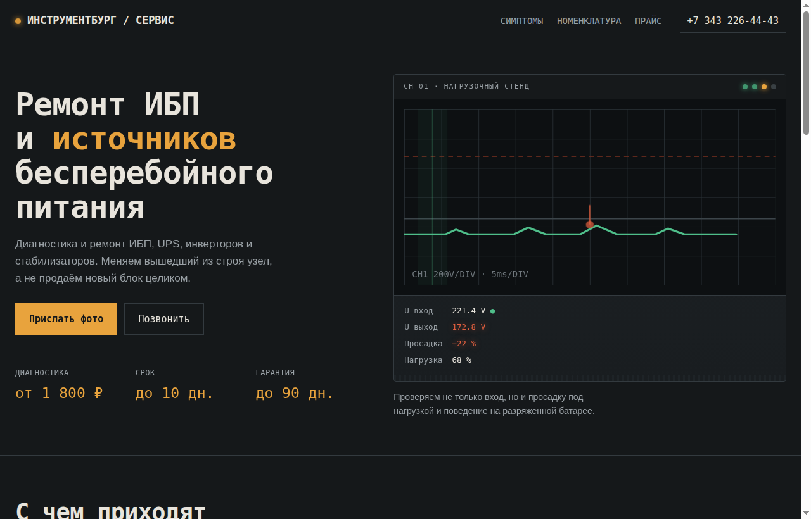
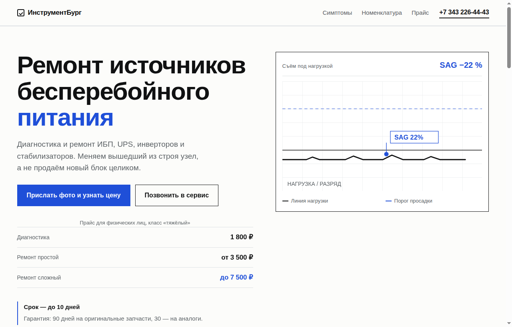

Разный характер, а не разный цвет. Во всех трёх есть анимация осциллографа, каскадное появление при загрузке и один сдержанный акцент. Выбери направление — доведу выбранный до продакшна.

Светлая бумага, hairline-сетка. Главный элемент — большой осциллограф, где линия нагрузки едет слева направо, отметка просадки пульсирует, луч сканирует. Движение осмысленное: линия — это сигнал, который мы ловим.

Не «чёрный фон с оранжевым», а реальная стойка: слоистые панели, вентиляционные щели, светящиеся индикаторы, моноширинные цифры и таблица замеров. Акцент — янтарный, как реальный индикатор на приборе.

Белый пол, крупная типографика, линейки, которые прочерчиваются при появлении. Цены сразу в первом экране таблицей. Симптомы — строки с подписью вероятного виновника. Самый быстрый и дешёвый по весу.